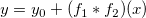
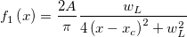
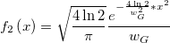

^2+\left( \sqrt{4\ln 2}\frac{x-x_c}{W_G}-t\right) ^2}dt")
Contents |
コンボリューション式は

ここで

および

Voigt ピーク関数
数：5
パラメータの名前:y0, xc, A, wG, wL
意味:y0 = オフセット, xc = 中心, A =面積, wG = Gaussian 半値幅, wL = Lorentzian 半値幅
下側境界:wG > 0.0, wL > 0.0
上側境界:なし
半値幅FWHM = 0.5346 * wL + sqrt(0.2166 * wL * wL + wG * wG)
nlf_voigt5(x,y0,xc,A,wG,wL)
FITFUNC\VOIGT5.FDF
Origin Basic Functions, Peak Functions, PFW, Spectroscopy, Convolution